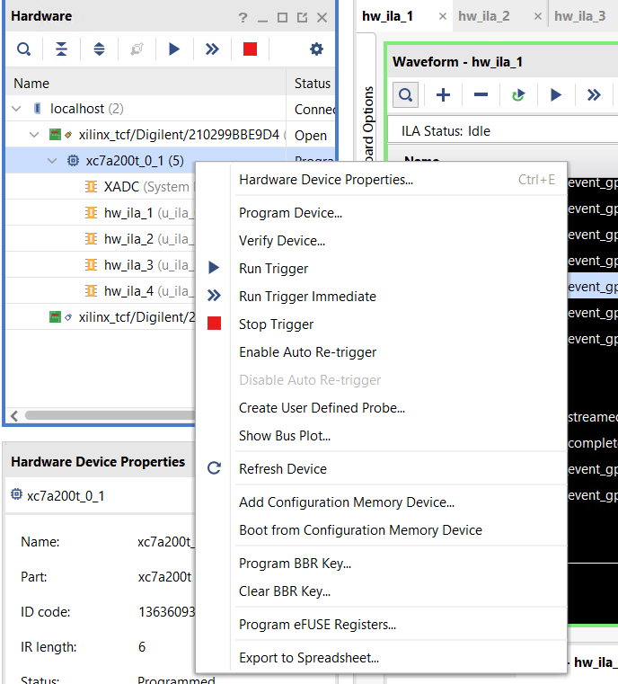

Local development
To develop locally, set up a venv using uv:
uv pip install -e .[dev]
Running locally
In the same virtual environment configured above, set these environment variables:
EPICS_PVAS_INTF_ADDR_LISTto the IP you want to bind to for the PVA serverEPICS_CA_ADDR_LIST(and probablyEPICS_CA_AUTO_ADDR_LIST=NO) to the instrument’s CA gateway - this is used for picking up the block names
kdaectrl --config config.toml --log-level DEBUG
An example config.toml is provided in the root of this repository; this will need to be modified for your machine.
Docker
If you’d prefer to run the application in a docker container, you can use docker build . --tag kdaectrl:latest and then run it with docker run -e EPICS_PVAS_INTF_ADDR_LIST=127.0.0.1 -e EPICS_CA_ADDR_LIST=127.0.0.1 -e EPICS_CA_AUTO_ADDR_LIST=NO kdaectrl:latest --config config.toml --log-level DEBUG.
State file
The program stores state (such as the last title, users, run number and so on) in a state.json file (configurable by the above) which will be created if not present with defaults.
Configuring the hardware
We have a test-bed streaming control board set up to work with NDXEMMA-B. This board is flashed using some software called Vivado lab edition which is currently being run on NDW2621. We deploy our software on ndw1836 which can be accessed via ssh - this machine is on the same network as the streaming control board.
Sometimes the board falls over and needs to be reprogrammed. To reprogram the board, select “Program device…”:

And then select the correct firmware to be written. Alternatively, ask the detector group!
Sending/reading data to/from the hardware
The streaming control board accepts reads and writes.
The format for reading is a 32-bit integer of the address to read, then a 16-bit integer of the block size. it will return a 32-bit address, 16 bit block size and 32-bit data. Note that all the bytes in this protocol are big-endian.
It’s worth noting that the 16 bit block size is the number of 32 bit “words” you are reading from or writing to - not the number of bytes.
The format for writing is a 32-bit integer of the address to read, a 16-bit integer of the block size, and then a 32-bit integer containing the data to write.
This module provides a command-line tool (udptalk) which allows arbitrary reads and writes. See udptalk --help for options.